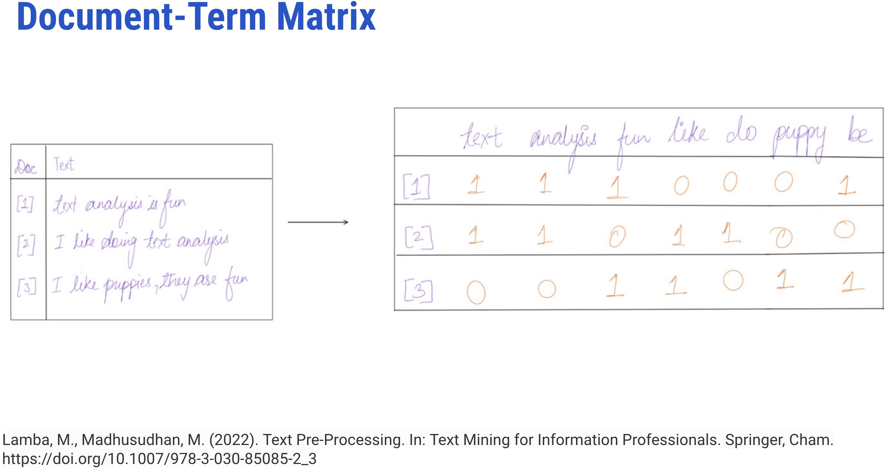
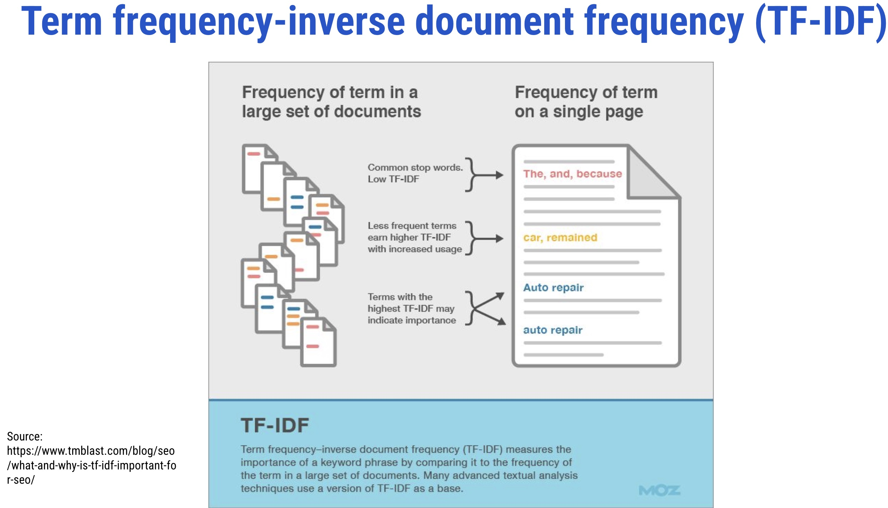
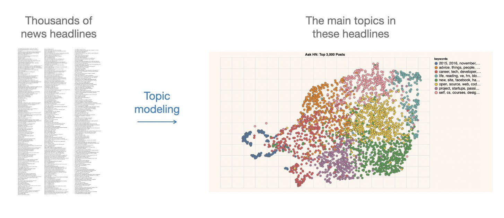
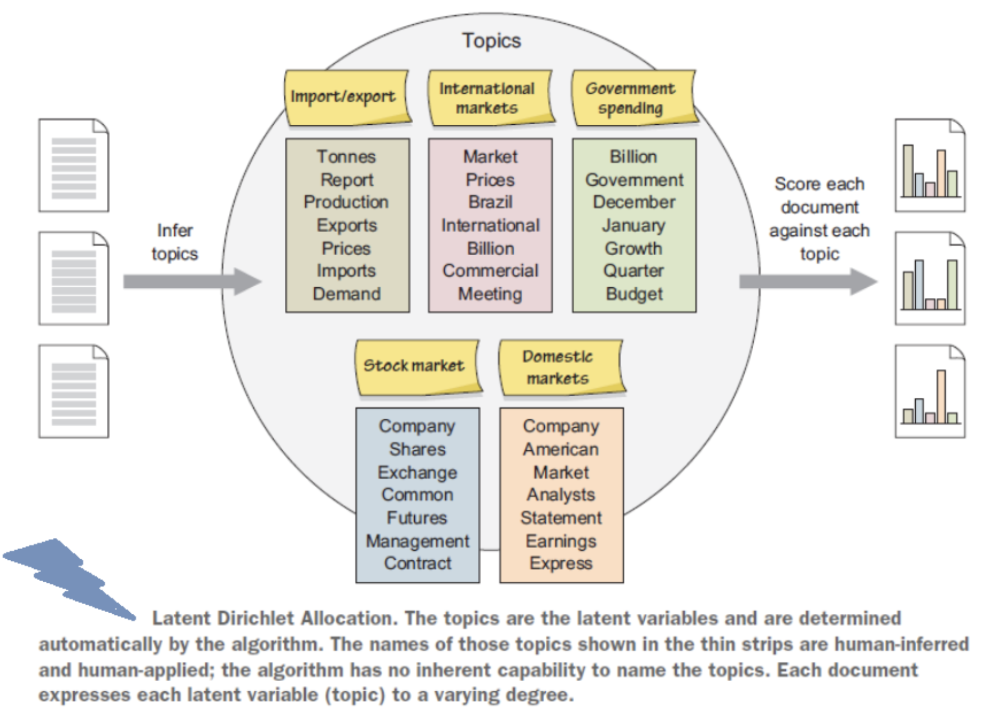
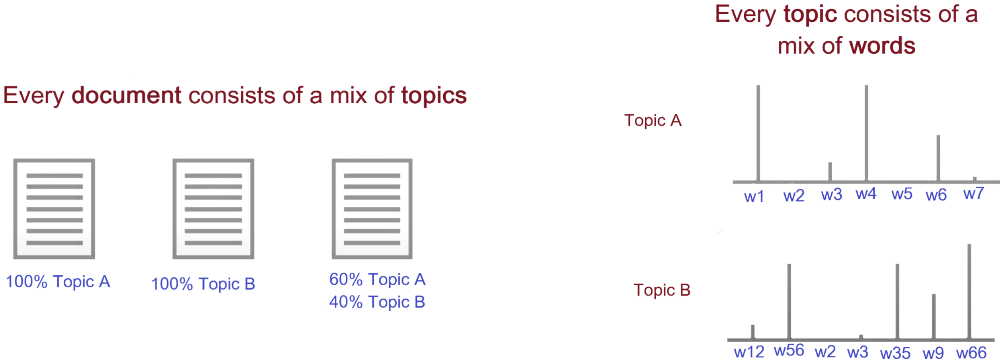
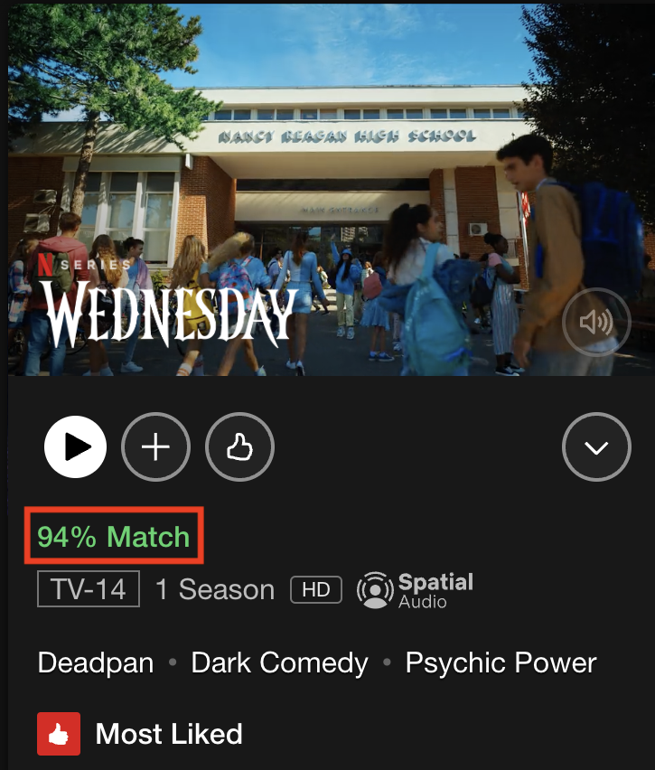
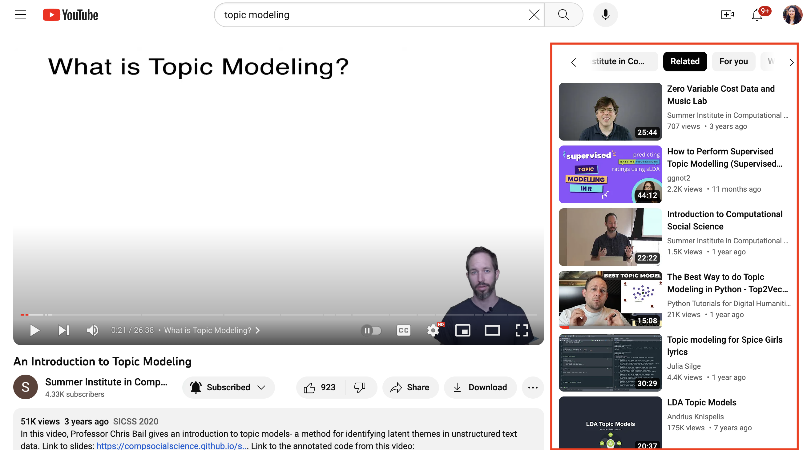

It is “a recurring pattern of co-occurring words” (Brett, 2012)
A topic can be defined as the main idea discussed in a text, i.e., the theme or subject of different granularity
Topics are simply groups of words from the collection of documents that represents the information in the collection in the best way
Topic Modeling
It is “a method for finding and tracing clusters of words (called topics) in large bodies of texts” (Brett, 2012)
It is a text mining approach to understand, organize, process, extract, manage, and summarize knowledge
Introduction
It performs soft clustering, where it presumes that every document is composed of a mixture of topics
It makes an excellent tool for discovery and helps to uncover evidence already present in the text
It has been called an act of reading tea leaves (Chang et al., 2009) or the process of highlighting words (Brett, 2012) based on their topics
It is based on statistical and machine learning techniques to mine meaningful information from a vast corpus of unstructured data and is used to mine document’s content
A subject expert (human-in-loop) is needed to label the topics
It represents terms as a table or matrix of numbers for a given corpus
In TDM, terms are represented as rows and documents as columns for a corpus where the number of occurrences of terms in the document is entered in the boxes

It represents terms as a table or matrix of numbers for a given corpus
It is a transposition of TDM
In DTM, each document is a row, and each word is the column

It evaluates the relevancy of a term for a document in a corpus and is the most popular weighting scheme in information retrieval (IR)
The term weighting is popularly used in IR and supervised machine learning tasks like text classification
It makes a list of more discriminative terms than others and assigns a weight to each highly occurring term
What Happens in Topic Modeling?

It infers abstract topics based on “similar patterns of word usage in each document”
These topics are simply groups of words from the collection of documents that represents the information in the collection in the best way
How Topic Modeling Works?


Topic Analysis + Time
It assists in identifying topics within a context and how they advance in time
For instance, over time, few documents within a topic may initiate content that varies from the original content; if that initiated content is shared by a lot of later documents, the content is recognized as a new topic
Hence, with the progression of time, topics advance, new themes emerge, and old ones become obsolete
So, topic modeling not just helps the librarians to decide the trending topics or related fields to their field of intrigue but additionally encourages them to distinguish new concepts and fields over time
Preparing a corpus (such as converting files from PDF to plain text format)
Conducting text pre-processing (removing stopwords, tokenization, stemming, n-grams)
Exploratory analysis (Word clouds, clustering)
Determining the number of topics (using perplexity, coherence, entropy, or eye-ball method)
Selecting the appropriate algorithm (such as LDA, STM, CTM)
Seeding (so that one can reproduce the algorithm with the same selected parameters)
Running the selected algorithm using proprietary or open-source tools (such as RapidMiner, TopicModelingTool) or programming languages (such as R or Python)
Iterating the whole process till the algorithm fits the model
When to Use Topic Modeling
When you have a vast collection of text documents
When the collection belongs to a specific subject
When the collection has a similar type of documents, such as when all files in the collection are newspaper articles
When NOT to Use Topic Modeling
When you have a relatively small number of documents
When you do not have any idea about your collection. In this case, clustering will be a better option than using topic modeling
When the collection has a mixture of different types of documents, such as when the collection is composed of newspaper archives, journal articles, and ETDs
2. How should we visualize and navigate the topical structure?
3. What do the topics and document representations tell us about the texts?
Output of topic modeling is not entirely human-readable, and one way to understand the results is through visualization
“Topic models are meant to help interpret and understand texts, but it is still the researcher’s job to do the actual interpreting and understanding” (Blei, 2012)
“Be sure that you can understand the visualization as topic modeling tools are fallible” (Blei, 2012)
Manika Lamba. (2022). Visualizing the Pace of COVID-19 Research: An Experimental Study of All India Institute of Medical Sciences (AIIMS), New Delhi. In SIS Annual Convention 2022, New Delhi, India.
Manika Lamba and Margam Madhusudhan. (2018). Metadata Tagging of Library and Information Science Theses:Shodhganga (2013-2017). In ETD2018 Taiwan Beyond the Boundaries of Rims and Oceans:Globalizing Knowledge with ETDs. Taipei,Taiwan.
Topic models do not model topics
It operates from
relevantly unrealistic assumptions and non-deterministic
cannot effectively be validated against a reasonable number of competing models
does not lock into a well-defined linguistic interface
does not scholarly model topics in the sense of themes or content (not true anymore - BERTopic + LLM)
Features are intrinsic make interpretation of its results prone to
apophenia: human tendency to perceive random state sets of elements as meaningful patterns
confirmation bias: human tendency to perceptually prefer patterns that are in alignment with pre-existing biases
While partial validation of the statistical model is possible, a conceptual validation would require an extended triangulation with other methods and human ratings, and clarification of whether statistical distinctivity of lexical co-occurrence correlates with conceputal topics in any reliable way
Topic modeling has been applied to numerous resources, such as
annual meetings
diary
clinical notes
case reports
newspapers
journals
research articles
preprints
- patents
- conferences
- chats
- online reviews
- MOOCs
- call for papers
- social media platforms
- RSS feed
- blogs
- open-ended survey responses
- emails
- digital libraries’ resources
- smart card data
- EZproxy daily log files
- data from library mobile apps
- virtual libraries’ resources
- reference questions
- library databases
- in-house journals
- institutional and digital repository resources
- theses and dissertations
- WebOPACs
- MOOC feedback, chats, and suggestions
- online library chats
- forums
- emails
- syllabuses
- library’s social media platform accounts
1. Making Ontologies: Mehler and Walitinger used topic modeling to build a Dewey Decimal Classification (DDC)-based topic classification model in digital libraries
2. Automatic Subject Classification: They can be used in libraries to index subject terms for documents
3. Bibliometrics: It can be used to study evolutionary pathways, citations, and trends to explore different hot and cold topics of research in a particular discipline
4. Altmetrics: It can be used to know what people are talking about your library on social media and what topics they care about
5. Recommendation Service: It can be used to recommend electronic resources based on the reading or search habits of the users


6. Organization and Management of Resources: It can be used to do metadata tagging of the electronic resources, library’s database, website, and repository resources
7. Better Searching and Information Retrieval of Resources: In digital libraries, it can help in providing a fast searching experience to users and better information retrieval of electronic resources